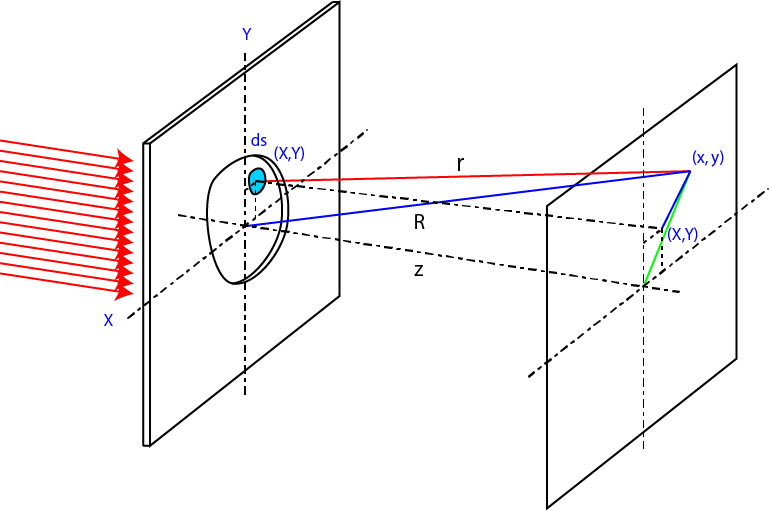

回折-21
微小開口からの回折-21
次に，微小開口からの回折を計算してみましょう．
この計算は，
Optics: International Edition, Eugene Hecht
Theory and Practice of Scanning Optical Microscopy, Tony Wilson, Colin Sheppard
らの本を参考にしました．また，藤田先生（阪大・工）にもいろいろ教えていただきました，ありがとうございます．
一般論
まずは，適当な形状を通過する光を考えましょう．

XY平面に任意の形状の穴を設定します．距離Zだけ離れた投影面の任意の座標(x,y)の光強度を求めます．
光の振動数を，ω，とすれば，その波形は，
\(\Large \sin ( \omega t - phase ) \)
となります．
位相 ＝ 光路÷波長×2π
となるので，
\(\Large phase = \frac{r}{\lambda} \times 2 \pi = k r \)
となります．ここで，ｋ，は波数です．従って，
\(\Large \sin ( \omega t - phase ) = \sin ( \omega t - k r ) \)
となります．光強度をE0，とすると，投影面での強度は距離zに反比例しますので，任意の開口の一部のエリアｄSからの発せられる光は，
\(\Large dE = \frac{E_0}{z} \sin ( \omega t - k r ) ds \)
となります．指数表示に変換すると，
\(\Large dE = \frac{E_0}{z} e^{i ( \omega t - k r )} ds \)
となります．
次に，開口の(X, Y)から投影面(x,y)の2点間の距離を求めましょう．距離ｒは，
\(\Large r = \sqrt{ (X-x)^2 + (Y-y)^2 + z^2} \)
となります．ここで，開口面の原点から投影面(x,y)の2点間の距離Rは，
\(\Large R = \sqrt{x^2 +y^2 +z^2} \)
となります．したがってｒは，
\(\Large r = R \sqrt{ 1+\frac{X^2+Y^2}{R^2}-2 \frac{Xx+Yy}{R^2}} \)
となります．ここで，距離Rが開口の大きさ，X,Yに比べて非常に大きければ，第二項が無視できますので，
\(\Large r = R \sqrt{ 1-2 \frac{Xx+Yy}{R^2}} \)
となります．これを展開すると，
\(\Large r = R (1- \frac{Xx+Yy}{R^2}) \)
と簡単にできるので，開口部で積分すると，
\(\Large \begin{eqnarray} E
&=& \iint_{Aperture} \frac{E_0}{z} e^{i ( \omega t - k R (1- \frac{Xx+Yy}{R^2}) )} ds \\
&=& \frac{E_0 e^{i ( \omega t - k R )}}{z} \iint_{Aperture} e^{ ik \frac{(Xx+Yy)}{R}} ds \\
\end{eqnarray} \)
となり，この二重積分の部分を計算すればよいのです．
では，具体的な開口形状について計算していきましょう．